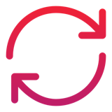
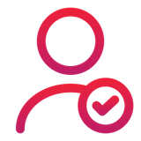
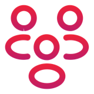
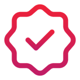

Cheat sheet · Le nouveau PDLC IA · 1/2
Le cycle, les gates, le contexte, les rôles
L'unité de travail devient la spec, le verdict reste humain.

La roue du PDLCmodule 1Discover
›
Design
›
Develop
›
Deploy
›
Deepen
›
Drop
Chaque phase remet une spec à la suivante ; ce qu'on observe en production revient en Discover comme un nouveau besoin.

Qui tient le verdict ?module 1| Niveau | Qui décide |
|---|---|
| Human | une personne fait et décide |
| AI‑assisted | une personne voit chaque sortie : le pilote |
| AI‑executed | un contrôle décide, l'humain voit les échecs |
| AI‑autonomous | l'humain ne voit que les exceptions ; encore en débat |
L'équipe gagne un niveau sur résultats mesurés, le perd si la qualité baisse.
 Les quality gatesmodule 2
Les quality gatesmodule 2
| Gate | Ce qu'on montre |
|---|---|
| G1 Ready to Spec | le besoin, un critère de succès chiffré |
| G2 Ready to Build | la spec relue, des NFR chiffrées, le contrat v1 publié |
| G3 Ready to Release | tests et scans au vert, la spec à jour |
| G4 Released and Observable | le flag tracé, le runbook, le retour arrière |
La machine vérifie, l'humain juge. Release ≠ Activation.
Le Context Nexusmodule 3
| Registre | Ce qu'il contient |
|---|---|
| Knowledge | ce qu'on sait : conventions, Decision Contexts |
| Purpose | ce qu'on veut : specs, Decision Directives |
| Contracts | ce qu'on exige : règles vérifiables avec un seuil |
| Process | ce qu'on fait : runbooks, déploiement |
- Des humains écrivent toujours Purpose et Contracts.
- Une ADR : le pourquoi en Knowledge, la règle en Purpose.
- Trois niveaux : organisation, programme, équipe ; une dérogation d'équipe est déclarée et approuvée.

Quatre casquettesmodule 4| Casquette | Ce qu'elle tient | Charge |
|---|---|---|
| Context Engineer | le contexte que lit l'agent | ~0,25 |
| Specification Engineer | la spec vérifiable | ~0,35 |
| Orchestrator | les agents, le budget ; tournant | ~0,3 |
| Decision Guarantor | la mise en production ; nommé, stable | ~0,15 |
Plus l'Evaluation Engineer, partagé. Charges indicatives en ETP ; un tech lead à trois casquettes porte ≈ 0,7 ETP de plus.

6 réflexes, un par module- Demandez qui tient le verdict.
- Un NO-GO nomme son critère.
- Non écrit dans le Nexus : invisible pour l'agent.
- Nommez les casquettes avant les outils.
- Lisez le coût avec la qualité, jamais seul.
- Mesurez l'équipe, jamais la personne.